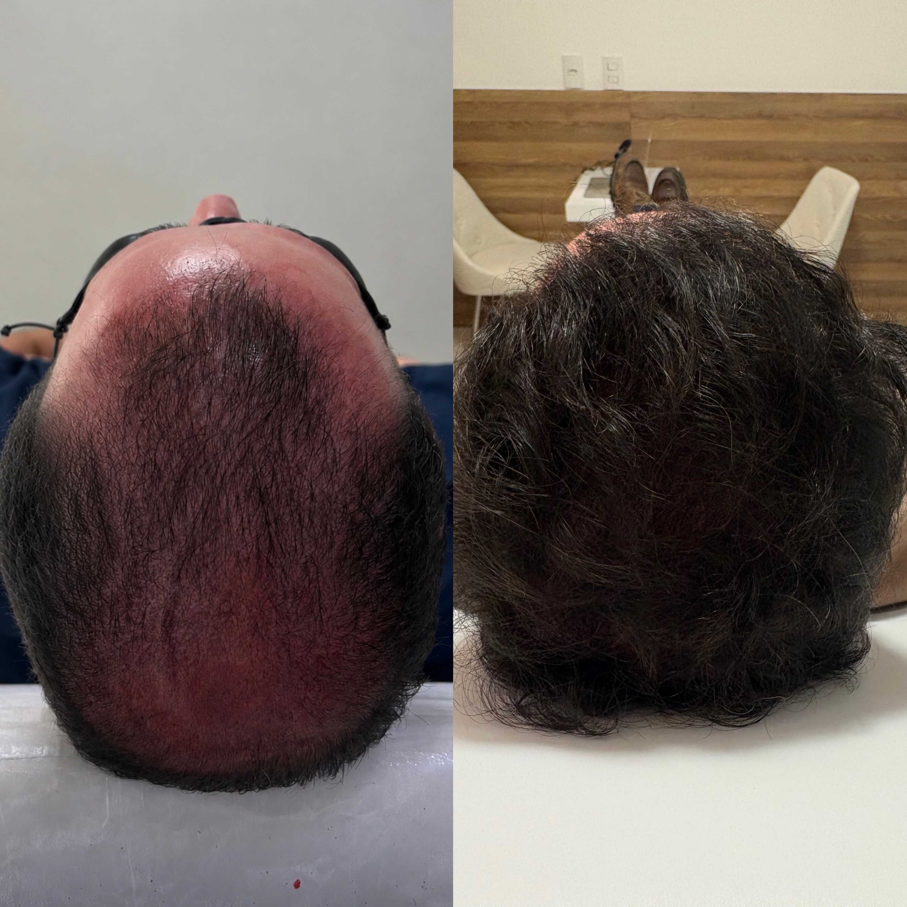
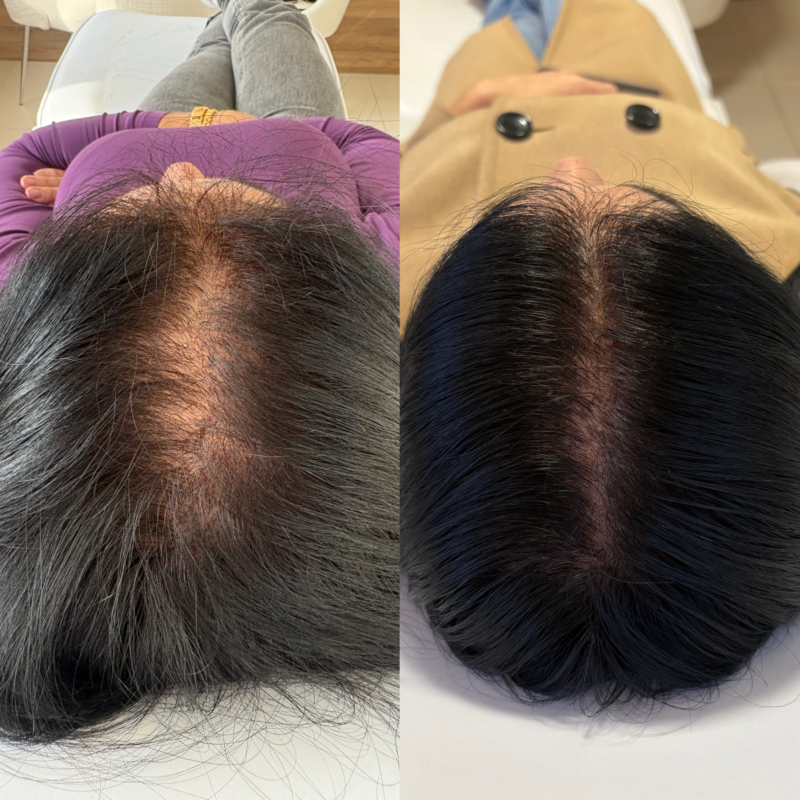
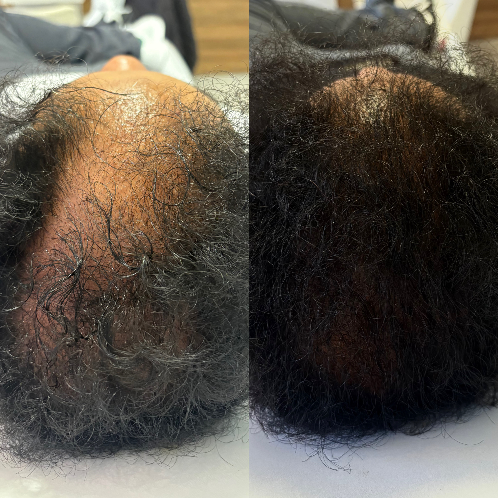
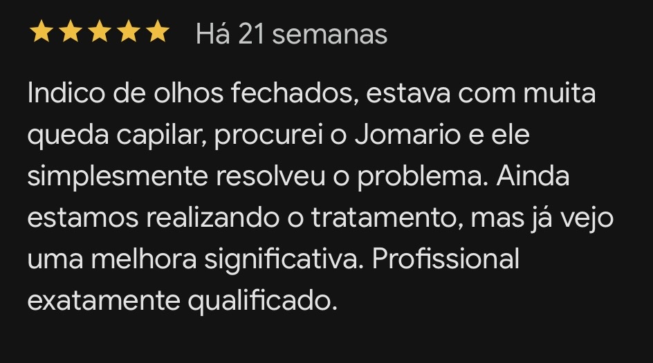
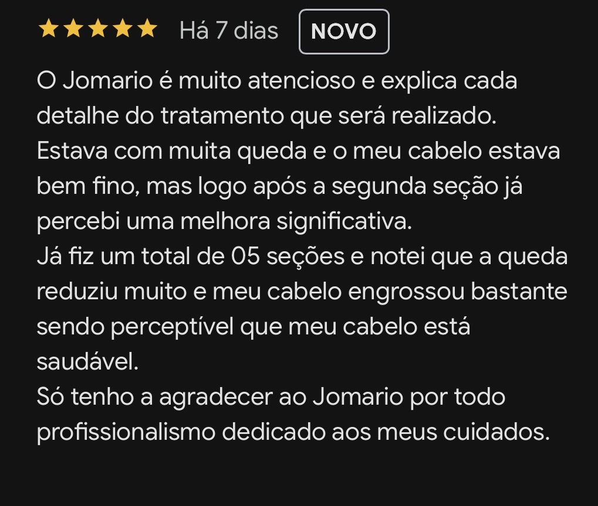

01
Queda capilar
Investigação e acompanhamento de quadros de queda intensa e alterações do ciclo capilar.
Tratamento clínico individualizado para queda capilar, calvície, fortalecimento dos fios e revitalização folicular.
Cada caso capilar possui características próprias. O acompanhamento começa com uma avaliação detalhada e tricoscopia para compreender o couro cabeludo, os fios e os sinais envolvidos na queixa.
O objetivo é construir uma estratégia de tratamento individualizada e acompanhar a evolução ao longo do tempo.
A conduta é definida de acordo com a avaliação e a necessidade de cada paciente.
Investigação e acompanhamento de quadros de queda intensa e alterações do ciclo capilar.
Estratégias de acompanhamento para diferentes padrões de alopecia, conforme avaliação individual.
Protocolos direcionados à qualidade, resistência e aparência dos fios.
Recursos clínicos selecionados para estimular e acompanhar a saúde do couro cabeludo.
Mais do que uma sessão isolada, a proposta é acompanhar a evolução do caso.
Conversa clínica e compreensão detalhada da queixa capilar.
Exame de imagem ampliada para observar couro cabeludo e fios.
Definição de um plano de acompanhamento de acordo com o caso.
Reavaliações e acompanhamento dos resultados ao longo do tratamento.
Evolução clínica real de pacientes em tratamento.





Agende uma avaliação e conheça uma abordagem personalizada para a sua queixa capilar.